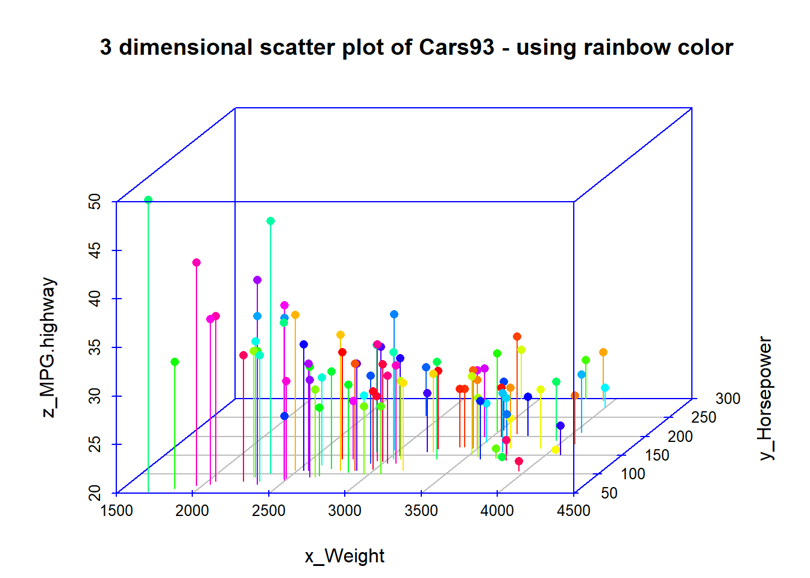

11.4 3차원 산포도 (3 dimensional scatter plot) : scatterplot3d()
이번 포스팅에서는 (4) 3차원 산포도 (3 dimensional scatter plot)에 대해서 소개하겠습니다.
3차원 그래프를 그릴 수 있는 Package가 여러개 있는데요, 그 중에서도 3차원 scatter plot에 특화된 scatterplot3d Package 의 scatterplot3d() 함수를 설명해보겠습니다.
11.4.1 데이터 세트
예제로 사용할 데이터는 MASS Package에 내장된 Cars93 데이터 프레임의 고속도로연비(MPG.highway), 마력(Horsepower), 무게(Weight) 변수들입니다.
##----------------------------------------
## 3 dimensional scatter plot
##----------------------------------------
library(MASS)
str(Cars93)## 'data.frame': 93 obs. of 27 variables:
## $ Manufacturer : Factor w/ 32 levels "Acura","Audi",..: 1 1 2 2 3 4 4 4 4 5 ...
## $ Model : Factor w/ 93 levels "100","190E","240",..: 49 56 9 1 6 24 54 74 73 35 ...
## $ Type : Factor w/ 6 levels "Compact","Large",..: 4 3 1 3 3 3 2 2 3 2 ...
## $ Min.Price : num 12.9 29.2 25.9 30.8 23.7 14.2 19.9 22.6 26.3 33 ...
## $ Price : num 15.9 33.9 29.1 37.7 30 15.7 20.8 23.7 26.3 34.7 ...
## $ Max.Price : num 18.8 38.7 32.3 44.6 36.2 17.3 21.7 24.9 26.3 36.3 ...
## $ MPG.city : int 25 18 20 19 22 22 19 16 19 16 ...
## $ MPG.highway : int 31 25 26 26 30 31 28 25 27 25 ...
## $ AirBags : Factor w/ 3 levels "Driver & Passenger",..: 3 1 2 1 2 2 2 2 2 2 ...
## $ DriveTrain : Factor w/ 3 levels "4WD","Front",..: 2 2 2 2 3 2 2 3 2 2 ...
## $ Cylinders : Factor w/ 6 levels "3","4","5","6",..: 2 4 4 4 2 2 4 4 4 5 ...
## $ EngineSize : num 1.8 3.2 2.8 2.8 3.5 2.2 3.8 5.7 3.8 4.9 ...
## $ Horsepower : int 140 200 172 172 208 110 170 180 170 200 ...
## $ RPM : int 6300 5500 5500 5500 5700 5200 4800 4000 4800 4100 ...
## $ Rev.per.mile : int 2890 2335 2280 2535 2545 2565 1570 1320 1690 1510 ...
## $ Man.trans.avail : Factor w/ 2 levels "No","Yes": 2 2 2 2 2 1 1 1 1 1 ...
## $ Fuel.tank.capacity: num 13.2 18 16.9 21.1 21.1 16.4 18 23 18.8 18 ...
## $ Passengers : int 5 5 5 6 4 6 6 6 5 6 ...
## $ Length : int 177 195 180 193 186 189 200 216 198 206 ...
## $ Wheelbase : int 102 115 102 106 109 105 111 116 108 114 ...
## $ Width : int 68 71 67 70 69 69 74 78 73 73 ...
## $ Turn.circle : int 37 38 37 37 39 41 42 45 41 43 ...
## $ Rear.seat.room : num 26.5 30 28 31 27 28 30.5 30.5 26.5 35 ...
## $ Luggage.room : int 11 15 14 17 13 16 17 21 14 18 ...
## $ Weight : int 2705 3560 3375 3405 3640 2880 3470 4105 3495 3620 ...
## $ Origin : Factor w/ 2 levels "USA","non-USA": 2 2 2 2 2 1 1 1 1 1 ...
## $ Make : Factor w/ 93 levels "Acura Integra",..: 1 2 4 3 5 6 7 9 8 10 ...11.4.2 3차원 산포도
11.4.2.1 패키지 불러오기
library(scatterplot3d)로 패키지를 로딩합니다.
# install.packages("scatterplot3d")
library(scatterplot3d)11.4.2.2 scatterplot3d() 함수의 형식
scatterplot3d(x, y, z, ...)로 3차원 그래프의 x, y, z 좌표(coordinate)를 지정해줍니다. 아래 예제에서는 x축에 무게(Weight), y축에는 마력(Horsepower), z축에는 연비(MPG.highway)를 할당하였습니다.
type = "h"는 수직선으로 표현하라는 옵션입니다. “p”는 점으로 표현, “l”은 선으로 표현하라는 의미입니다. 아래 예시의 경우는 3차원 공간에 나타내다 보니 “p”나 “l”보다는 “h”가 점과 x, y축 기준 수직선이 함께 보여서 인지하기에 더 수월하기에type = "h"로 해서 그려보았습니다.
scale.y = 0.7은 x축과 z축을 기준으로 상대적으로 y축은 0.7 배로 해서 나타내라는 뜻입니다. 아래의 프로그램을 복사한 다음에 숫자를 바꿔서 한번 그려보시면 그래프가 어떻게 바뀌는지 금방 이해하실 겁니다.
angle = 50은 x와 y축의 각도를 뜻합니다.scale.y와angle옵션의 숫자를 바꿔가면서 분석가가 원하는 길이, 각도가 나올 때까지 몇 번 trial and error 로 시도를 해보시면 됩니다.
highlight.3d = TRUE옵션은 y축의 좌표를 기준으로 색깔이 달라지게 하라는 의미입니다. 아래 그래프의 경우 y축 좌표 값이 작을 수록 빨간색, y축 좌표값이 클수록 검정색으로 자동으로 바뀌었습니다. 만약highlight.ed = FALSE라고 지정하면 그냥 y축 좌표값이 어떻게 되던간에 모두 검정색으로 나오게 되므로 3차원의 공간감을 나타내는데 부족함이 있습니다. 따라서highlight.3d = TRUE옵션 사용을 권장합니다.
box = TRUE옵션은 아래에 파란색(col.axis = "blue")으로 표시된 부분을 그리라는 뜻입니다. default 는box = TRUE이므로 별도로 명기하지 않아도 되며, 표기하기 싫을 때는box = FALSE라고 표기해야 겠지요.
grid = TRUE는 아래의 예에서 회색(col.grid = "gray")으로 표시된 부분을 나타낼지 정하는 옵션입니다. 이 역시 default 는grid = TRUE이므로 별도로 명기하지 않아도 되며, grid 를 제외하고 싶은 때는grid = FALSE라고 옵션을 부여하면 됩니다.
mar = c(3, 4, 4, 3)은 아래쪽, 왼쪽, 위쪽, 오른쪽의 순서대로 margin을 부여하는 옵션입니다. margin도 숫자를 조금씩 바꿔가면서 한번 시험해보시기 바랍니다. 그래프가 margin에 따라서 조금씩 바뀌는걸 알 수 있을 겁니다. 귀찮으면 그냥 defaultmargin c(5.1, 4.1, 4.1, 2.1)을 사용하면 되겠습니다(mar 옵션 미사용하면 default margin 적용됨).
xlab, ylab, zlab은 x축, y축, z축에 label 부여할 때 사용하는 옵션입니다.
main =“xxx”은 제목 붙이는 옵션이구요.
11.4.2.3 3차원 산포도 그리기
x <- Cars93$Weight
y <- Cars93$Horsepower
z <- Cars93$MPG.highway
# 3 dimensional scatter plotting
Cars93_3d <- scatterplot3d(x, y, z,
type = "h", # "p" for point, "l" for line, "h" for vertical lines to x-y-plane
pch=16, # symbol, character
scale.y = 0.7, # scale of y axis related to x- and z axis
angle = 50, # angle between x and y axis
highlight.3d=TRUE, # points will be drawn in different colors related to y coordinates
box = TRUE, # a logical value indicating whether a box should be drawn around the plot
col.axis="blue", # the color to be used for axis
grid = TRUE, # a logical value indicating whether a grid should be drawn on the plot
col.grid="gray", # the color to be used for grid
mar = c(3, 4, 4, 3), # margin : c(bottom, left, top, right)
xlab = "x_Weight", # label for the x
ylab = "y_Horsepower", # label for the y
zlab = "z_MPG.highway", # label for the z
main="3 dimensional scatter plot of Cars93") # main title
11.4.2.4 색상 지정
혹시 색깔을 좀더 다양하게 해보고 싶다면 아래처럼 color 옵션을 사용하면 됩니다. rainbow color를 적용해보았습니다. 저는 위에서 그린 highlight.3d = TRUE 옵션이 아래의 color = rainbowcolor 로 화려하게 그린 그래프보다 시각적으로 더 인지하기에 좋아 보이네요. 아래 그림은 좀 어지럽게 느껴지구요.
# using rainbow color
dim(Cars93)## [1] 93 27rainbowcolor <- rainbow(93) # number 93 indicate 93 observations of Cars93 dataframe
Cars93_3d <- scatterplot3d(x, y, z,
type = "h", # "p" for point, "l" for line, "h" for vertical lines to x-y-plane
pch=16, # symbol, character
scale.y = 0.7, # scale of y axis related to x- and z axis
angle = 50, # angle between x and y axis
color = rainbowcolor, # colors of points in the plot
box = TRUE, # a logical value indicating whether a box should be drawn around the plot
col.axis="blue", # the color to be used for axis
grid = TRUE, # a logical value indicating whether a grid should be drawn on the plot
col.grid="gray", # the color to be used for grid
mar = c(3, 4, 4, 3), # margin : c(bottom, left, top, right)
xlab = "x_Weight", # label for the x
ylab = "y_Horsepower", # label for the y
zlab = "z_MPG.highway", # label for the z
main="3 dimensional scatter plot of Cars93 - using rainbow color") # main title
11.4.2.5 회귀모형 표시하기
다음으로 Cars93_lm <- lm(MPG.highway ~ Weight + Horsepower) 를 사용해서 x축 무게(Weight)와 y축 마력(Horsepower)와 z축 고속도로연비(MPG.highway) 간의 회귀모형을 적합시킨 후에, 3D scatter plot에 회귀평면(regression plane)을 그려보도록 하겠습니다.
보통 2차원 산포도를 그리고 선형회귀모형을 적합시킨 후에 선형회귀선을 2차원 산포도에 추가로 그려놓고는 했었을 것입니다. 아래 예시는 z ~ x + y 로 회귀모형을 적합시켜서 3차원 그래프로 그린 것인데요, 아무래도 2차원 그래프보다는 좀 이해하기가 어렵습니다.
# Adding a regression plane to the "scatterplot3d"
attach(Cars93)## The following object is masked _by_ .GlobalEnv:
##
## Cylinders## The following objects are masked from Cars93 (pos = 13):
##
## AirBags, Cylinders, DriveTrain, EngineSize, Fuel.tank.capacity,
## Horsepower, Length, Luggage.room, Make, Man.trans.avail,
## Manufacturer, Max.Price, Min.Price, Model, MPG.city, MPG.highway,
## Origin, Passengers, Price, Rear.seat.room, Rev.per.mile, RPM,
## Turn.circle, Type, Weight, Wheelbase, WidthCars93_lm <- lm(MPG.highway ~ Weight + Horsepower)
Cars93_3d$plane3d(Cars93_lm, lty.box = "solid")## Error in segments(x, z1, x + y.max * yx.f, z2 + yz.f * y.max, lty = ltya, : plot.new has not been called yetdetach(Cars93)위의 내용은 Error 발생….
11.4.3 영화 Minority Report
만약 위의 그래프를 톰크루즈가 주연으로 나왔던 영화 minority report 처럼 3차원 그래프를 상, 하, 좌, 우로 자유자재로 돌려볼 수 있다면 아마도 좀더 데이터의 분포 형태를 좀더 인지하기가 쉬울 것입니다. 아쉽게도 scatterplot3d Package는 이 기능을 지원하지 않는데요, 혹시 이 기능을 원하신다면 3D 그래프를 회전시키면서 볼 수 있는 다른 오픈소스를 찾아보셔야 할 거예요.
[ 영화 Minority Report 의 한 장면 ]
Youtube 동영상 : https://youtu.be/PJqbivkm0Ms
scatterplot3d Package에 대해서 좀더 알고 싶은신 분, 다른 예제를 참고하고 싶으신 분은 아래의 Reference를 참고하시기 바랍니다.